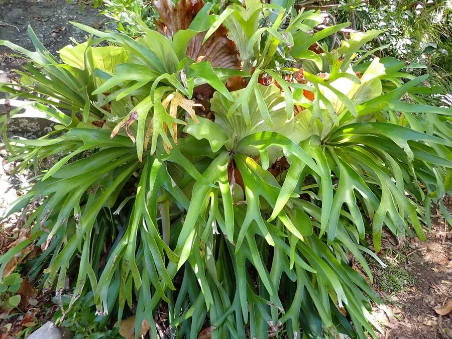

蕨类与裸子植物 · 植物界
鹿角蕨 Platycerium bifurcatum

鹿角蕨的孢子叶深裂分叉如鹿角，基部还有贴附树干的盾状叶，是热带附生蕨类中形态奇特的观赏明星。
- 分类
- 门蕨类植物门纲水龙骨纲目水龙骨目科水龙骨科属鹿角蕨属
- 栖息环境
- 热带雨林的树干与岩壁，喜温暖高湿和明亮散射光
- 地理分布
- 原产澳大利亚东北部、新几内亚及东南亚热带雨林
- 保护级别
- 暂无评估；野外采集受管制，市售多为人工繁殖
物种志
鹿角蕨是水龙骨科的附生蕨类，因孢子叶深裂分叉、形似鹿角而得名。它的叶分两种：基部的盾状叶宽大扁平，紧贴树干或岩石，逐渐干枯后变成褐色，负责包裹根系、收集水分和腐殖质；上部的孢子叶直立或下垂，革质，多次二叉分叉，形如鹿角，绿色，背面着生褐色孢子囊群。整株形态奇特，观赏性极强。
鹿角蕨原产澳大利亚东北部与东南亚的热带雨林，常附生于树干上，喜温暖、湿润和明亮散射光，忌积水与霜冻。它以孢子繁殖为主，也可分株或利用侧芽繁殖，栽培时多用木板、蛇木盆等附着固定，是雨林缸和墙面绿化的热门植物。野生鹿角蕨生长缓慢，加上雨林破坏与过度采集，部分地区资源受到威胁；人工繁殖技术成熟后，市场上的植株多为园艺栽培品。
形态与习性
- 叶型盾状叶与孢子叶两种，分工不同
- 孢子叶多次二叉分叉，形似鹿角
- 株高30–90 cm，孢子叶可长到 1 m 以上
- 温度适宜 20–28 ℃，忌霜冻
- 光照喜明亮散射光
- 繁殖孢子、侧芽或分株繁殖
- 用途附生造景与墙面绿化
趣味知识
- 鹿角蕨的盾状叶干枯后不脱落，层层包住根部，像天然的“盆”。
- 它的孢子叶可长到 1 m 以上，分叉次数因品种而异。
- 人工繁殖常用侧芽分株，一些稀有品种仍是园艺收藏热门。